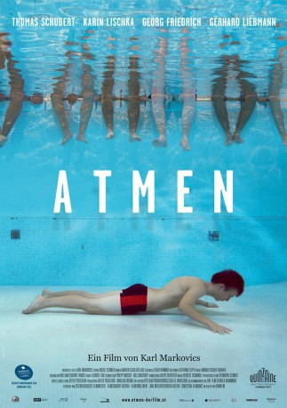
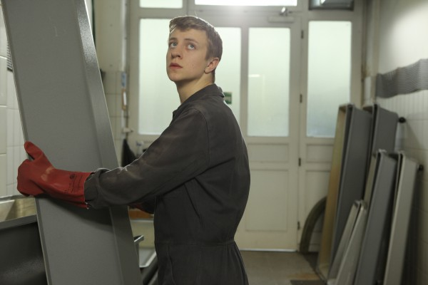

#4618 Atmen
Alternativ: Breathing (Originaltitel)
 
 IMDB-Wertung: 7.0 / 10
IMDB-Wertung: 7.0 / 10  Metascore: 0
Metascore: 0 
Der 19-jährige Roman, wegen Totschlags verurteiltet, steht nach vier Jahren Haft an der Kippe zwischen vorzeitiger Entlassung und Verbüßung der Vollstrafe. Ein Job bei der Wiener Bestattung bringt ihn zurück ins Leben
Jahr: 2011
Dauer: 93 Minuten
FSK: 12
Land: Österreich Studio: Thim FilmTonspuren:
Untertitel: Deutsch, Englisch,
Auflösung: 1080p (1920x816) Größe: 3112 MB
Genre: Drama
Regisseur: Karl Markovics
Drehbuch: Anonymous
Soundtrack:
Darsteller:
-  Thomas Schubert als Roman Kogler
 Georg Friedrich als Rudolf Kienast
Georg Friedrich als Rudolf Kienast Gerhard Liebmann als Walter Fakler
Gerhard Liebmann als Walter Fakler- Karin Lischka als Margit Kogler
- Stefan Matousch als Gerhard Schorn
- Luna Zimic Mijovic als Mona
- Georg Veitl als Jürgen Hefor
- Klaus Rott als Leopold Wesnik
- Johann Bednar als Schlossermeister
- Michael Duregger als Polizist #2
- Elena Dörfler als Roberta Fakler
- Lukas Fuchs als Ikea customer with hat
- Magdalena Kronschläger als Junge Frau
- Louis Markovics als
- Reinhold G. Moritz als Josef Kallinger
- Martin Oberhauser als Gefängniswärter #3
- David Oberkogler als Polizist #1
- Robert Putzinger als Zugbediensteter
- Peter Raffalt als Richter
- Gabriela Schmoll als Haushaltshilfe
- Stephanie Taussig als Schwiegertochter
- Werner Wultsch als Mann im Jogginganzug
Datei: X:\2011(A-F)\Atmen (2011, FSK12, 1920x816).mkv seit 24.10.2016
Festplatte: HD 2010(G-Z)-2011(A-F)
 Es gibt insgesamt 86 Filme in der Gruppe '2011(A-F)'
Es gibt insgesamt 86 Filme in der Gruppe '2011(A-F)'